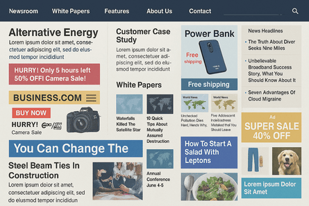
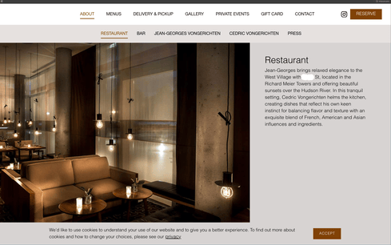

Is Your Website Helping Your Business, or Hurting It?
How many of you, as business owners, have invested significantly in a website without a clear plan, only to see no results?
On the other hand, do you know entrepreneurs who want to run their entire business through a website but refuse to invest in it properly? They often opt for cheap solutions, a decision that ultimately hinders their growth in the long run. Investing your hard-earned money—no matter the amount—into something that doesn't bring results is a total waste. Conversely, investing wisely in a well-planned website is one of the best decisions you can make for your business.
As the founder of Labinitial, I've built numerous business applications for a variety of industries—from laundry services and healthcare equipment platforms to law firms.
My experience has shown me that every business has unique needs. A common frustration I hear from business owners is, "I have a proper landing page and a beautiful banner with so much information, so why aren't people engaging?"
This leads to the next critical question: "Even if they engage for a moment, why aren't they converting into leads?"
What makes a website responsible for poor business growth? The answers often lie in these common mistakes:
Ignoring Strategy: Design, Data Structure, and SEO Must Come First.
Not knowing that design, data structure planning and SEO always come first even before the creation of a website. Poor SEO can ruin your business for sure. Did you consider your SEO strategy before building your website? A proactive approach ensures that quality, low-competition keywords are integrated from the beginning, helping your site rank better upon launch.
A client in Saudi Arabia asked Labinitial to build a platform for their laundry business. They wanted a custom point-of-sale (POS) system not just for their own shop, but as a SaaS product to sell monthly subscriptions to other businesses. However, they had a restrictive budget and were uninterested in investing in SEO. Consequently, they ended up with great software but very few customers.
Irrelevant Design and Valueless Content.
I once reviewed a document-clearing business website, www.bluemarkdcs.com, that suffered from poor design and unfocused content. The site owner shared that his monthly visitor count was extremely low, and he had no idea why. When I asked about the site's creation, he admitted he had invested very little, and a developer had built it without a business-centric mindset. I advised him to redevelop the site and invest in a comprehensive strategy including SEO, website that really solves people’s problem, blog writing, and marketing. Today, the Bluemarkdcs website is professional and is generating more leads than ever before. Success is a combination of planning, SEO, a problem-solving website, and marketing.
Presenting Too Much Information Without a Clear Focus.
An overload of information, even if it's important, can overwhelm and confuse visitors, causing them to leave.

Being clueless about how pages are crawled, what users search for, and why they leave.
You might not know how search engine bots actually crawl your pages, what your customers are really searching for, and how they interact with your content only to leave immediately (bounce).
The "Launch and Abandon" Mistake: You Must Maintain Your Website Until the Day You Die.
Seriously. A website requires relentless, ongoing work. That means proper weekly, monthly, and yearly maintenance. It means you have to constantly play with your keywords and analyze your site data to win the game of attracting visitors. You will also be responsible for solving issues with site errors, the database, and the server.
Using the Wrong Technology for the Job.
Do you need WordPress but are using something else? Do you need a custom-coded site but are stuck with a template from Wix? Unnecessarily demanding a specific technology like PHP or Python without knowing if it serves your business goals is a recipe for failure.
Feature Creep: Adding Unnecessary Features that Harm User Experience.
It's easy to fall into the trap of adding more and more features that you feel are important, but which actually complicate the user journey and ruin their experience.
Lacking a Clear Objective.
Before building a website, you must ask: what is its primary goal? Is it simply a digital brochure to showcase your brand, or is it a functional tool designed to save you time, simplify processes, and increase your return on investment?
Having a Weak Online Presence and Brand Value.
Without a strong online presence, positive reviews, and established brand value, even a great website will struggle. A website exists within a larger ecosystem.
Common Technical and Design Mistakes.
Overloading the homepage with a massive, slow-loading banner section can negatively impact user experience and SEO. Similarly, using outdated media formats or poorly coded widgets and scripts can damage your site's health and search engine ranking.

A website is a powerful tool that not only builds an online presence but also attracts customers, earns their trust, and strengthens your business financially.
The right technology is crucial. A Flutter-based application might be great for desktop, but what if your primary goal is speed? The development language that works for another business might not be right for your industry. Some clients need a WordPress site for its user-friendly dashboard. Others need Laravel and a custom database for more control. Some, like many of our clients at Labinitial, thrive with a high-performance JAMstack site using Firebase and JavaScript. And some businesses only need a simple, static site with HTML and CSS.
Let's dive into another example. If you analyze labinitial.com with Google's PageSpeed Insights, you'll see great desktop scores: Performance: 98, Best Practices: 96, SEO: 100. This is excellent. But the mobile scores, while still good, are lower: Performance: 86.
This brings up the right question: Where should you prioritize optimization? Desktop or mobile? Or both? It's critical to understand what works best for your audience and business.
Let's Talk About Your Project
You can also check though online tools and consultations from an expert whether your website is doing great or need improvements based on my discussed points.
I am here to help you make these decisions. I offer a free 20-minute consultation to understand your business needs, review your existing website, and suggest what, if anything, needs to be fixed. You can schedule this by visiting the contact section at www.labinitial.com.
I will also guide you on how to plan your SEO. You need an expert who understands keyword research, can examine your current site traffic, and analyze trends to estimate your website's potential. We can identify unnecessary pages or content that might be hurting your ranking. For this guidance, I don't ask for any payment—just a heartfelt thank you if you find it helpful.